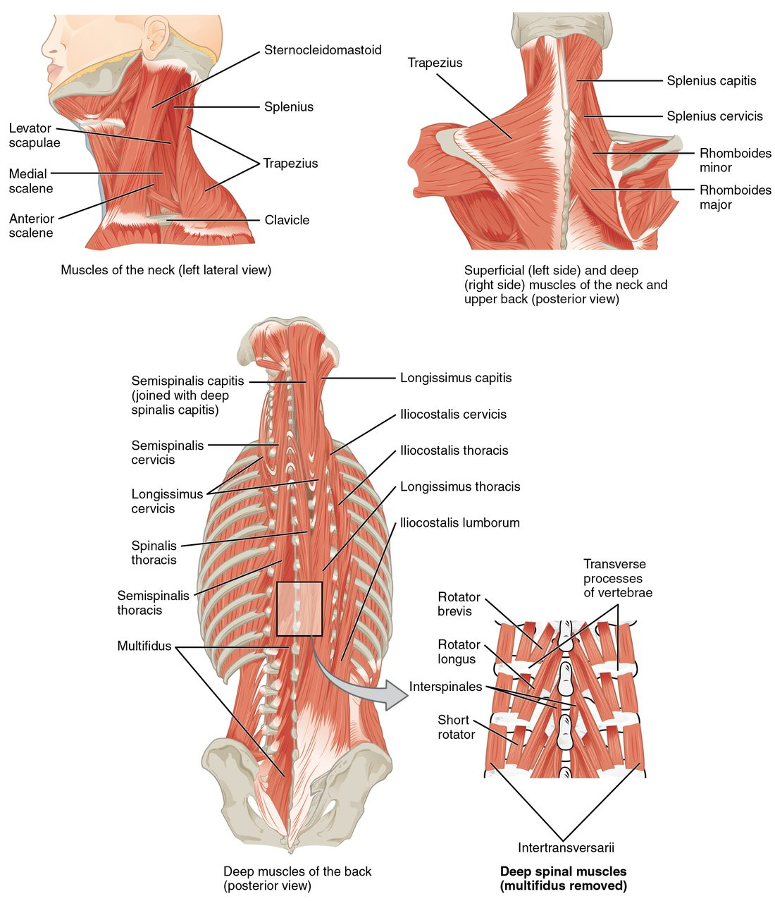
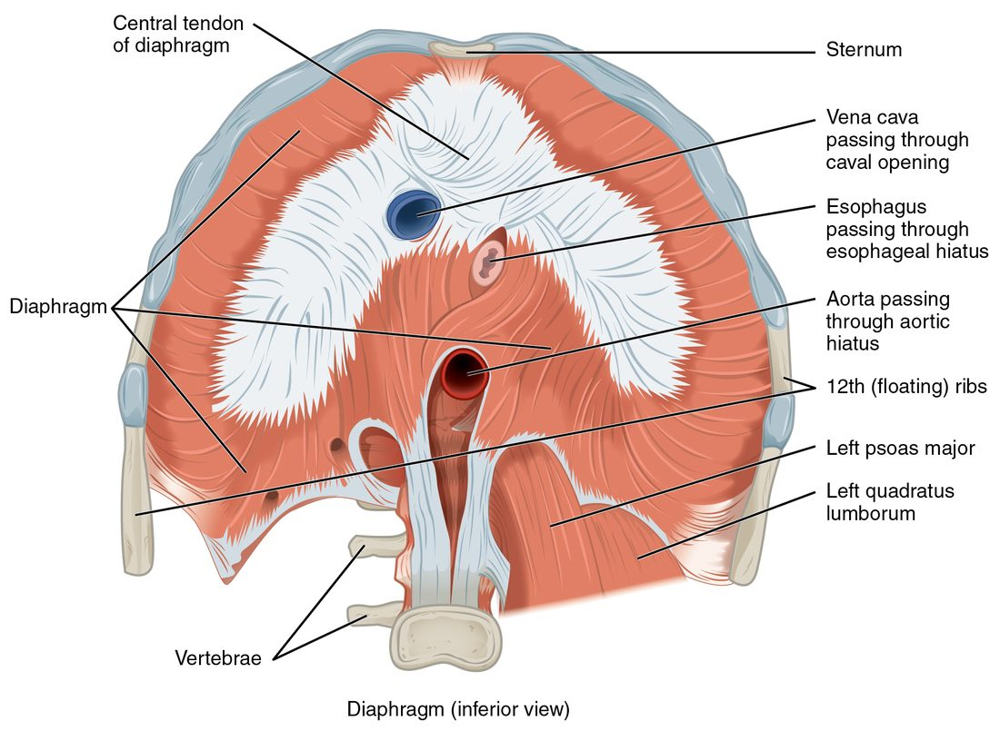
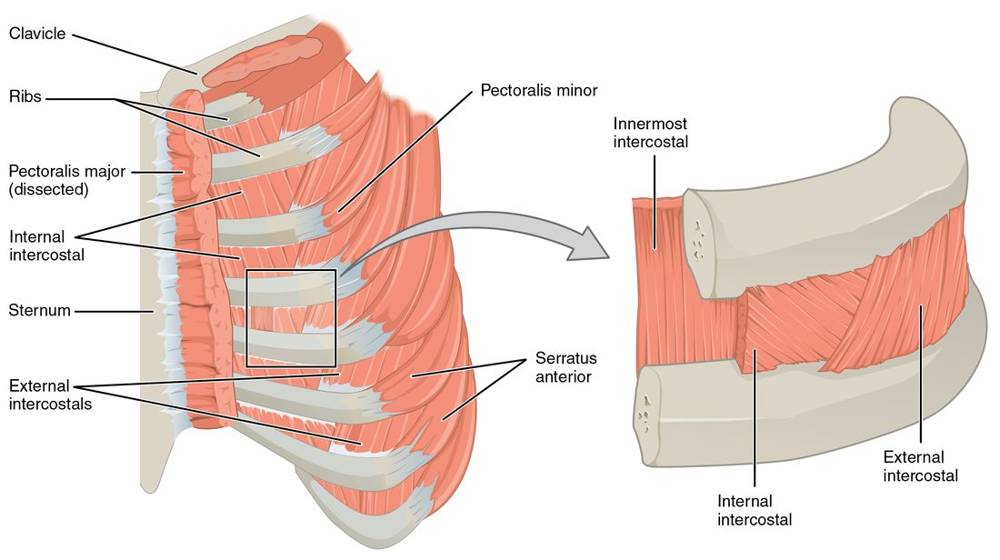
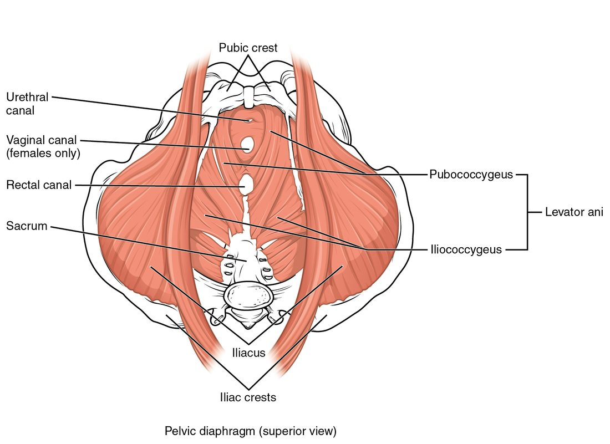

The trunk has no bony wall in front of the abdomen and no bony floor under the pelvis. Muscles fill both gaps. This page covers the muscles of the trunk you need to know: the back muscles that hold you upright, the abdominal muscles in layers that wrap the belly, the breathing muscles between and under the ribs, and the pelvic floor that closes the bottom of the trunk. For each major muscle you get its origin, insertion and action, and the reason it works the way it does.
Deep back muscles
Stand up and bend forward to touch your toes, then slowly stand back up. The long ridges of muscle on either side of your spine work the whole way: first braking your fall forward, then pulling you back upright. These are the deep back muscles, the muscles that lie along the vertebral column beneath the large muscles of the shoulder and upper back.
Erector spinae
The largest of them is the erector spinae (erector = one that raises; spinae = of the spine), the prime mover for extending the vertebral column. It is not one muscle but three columns, side by side, on each side of the spine (Figure 1). From lateral to medial they are:
- The iliocostalis group (ilio- = ilium, cost- = rib), the most lateral, running from the iliac crest up to the ribs and the lower cervical vertebrae.
- The longissimus group (longissimus = longest), in the middle, running from the lower vertebrae up to the transverse processes of the vertebrae above and, at the top, to the mastoid process of the skull.
- The spinalis group, the most medial and smallest, running between the spinous processes.
A memory aid, lateral to medial: "I Love Spaghetti". Each column is subdivided by region, which is what the second word of each label in the figure means: lumborum (lower back), thoracis (chest), cervicis (neck) and capitis (head).

- Origin: a thick common tendon on the iliac crest, the back of the sacrum and the spinous processes of the lumbar vertebrae.
- Insertion: the ribs, the transverse and spinous processes of the vertebrae higher up, and the mastoid process.
- Action: both sides together extend the vertebral column and hold it upright against gravity. One side alone bends the column to that side (lateral flexion). As you bend forward, they contract eccentrically, lengthening while they brake the movement.
Deeper still lie many short muscles that run from one vertebra to the next few (shown in the inset of Figure 1). They steady individual vertebrae and make small adjustments while the large columns move the whole spine.
Splenius
The splenius (splenion = bandage) muscles wrap diagonally over the deeper muscles at the back of the neck. They originate on the nuchal ligament and the spinous processes of the lower cervical and upper thoracic vertebrae. The splenius capitis inserts on the mastoid process and the occipital bone; the splenius cervicis inserts on the transverse processes of the upper cervical vertebrae.
- Both sides: extend the head and neck, tipping your head back to look up.
- One side: turns the face to the same side and bends the neck to that side.
Compare the sternocleidomastoid from the previous topic, which turns the face to the opposite side. Turning your head to the right uses the right splenius together with the left sternocleidomastoid.
Abdominal wall muscles
Place a hand on your belly and cough. The wall goes hard under your hand. The abdominal wall muscles did that: four muscles on each side in front, stacked in layers, plus one in the back wall (Figure 2).

The vertical muscle: rectus abdominis
The rectus abdominis (rectus = straight; abdomin- = belly) runs straight up the front of the abdomen, one strap on each side of the midline.
- Origin: the pubic crest and the pubic symphysis.
- Insertion: the xiphoid process and the costal cartilages of ribs 5 to 7.
- Action: flexes the vertebral column (a sit-up or curl), and compresses the abdomen.
Three or so bands of tendon cross each strap, the tendinous intersections. They divide the muscle into the blocks of a "six-pack". Each strap is enclosed in a rectus sheath, a tough envelope formed by the aponeuroses of the three flat muscles as they pass to the midline. The sheaths of the two sides meet at the linea alba (white line), a seam of dense collagen running from the xiphoid process to the pubic symphysis.
The three flat muscles
On each side of the rectus abdominis, three flat sheets wrap around the belly, one on top of another. Their fascicles run in three different directions, like the plies of plywood, which makes the wall strong in every direction.
- External oblique (outermost): originates on the outer surfaces of the lower eight ribs. Its fascicles run downward and toward the midline, the direction your fingers point when you put your hands in your front pockets. It inserts through a broad aponeurosis into the linea alba, the pubis and the iliac crest. The lower free edge of this aponeurosis, stretched from the anterior superior iliac spine to the pubis, forms the inguinal ligament in the groin.
- Internal oblique (middle): originates on the iliac crest, the inguinal ligament and the deep fascia of the lower back. Its fascicles run upward and toward the midline, at right angles to the external oblique. It inserts on the lower ribs and, through its aponeurosis, into the linea alba.
- Transversus abdominis (innermost; transversus = across): originates on the lower costal cartilages, the iliac crest, the inguinal ligament and the deep fascia of the lower back. Its fascicles run horizontally around the belly like a belt. It inserts into the linea alba and the pubis.
What the abdominal wall does
- It compresses the abdomen. All four front muscles squeeze inward. Because the organs inside are soft and nearly incompressible, the pressure inside the abdomen rises. That pressure pushes the diaphragm up in a forceful breath out, a cough or a sneeze, and bears down during vomiting, emptying the bladder and bowel, and childbirth.
- It bends and twists the trunk. Both rectus abdominis muscles flex the spine. One external oblique turns the trunk toward the opposite side, and one internal oblique turns it toward the same side; turning to the right uses the left external oblique with the right internal oblique, whose fibers line up diagonally across the body. Contracting on one side only also bends the trunk to that side.
- It holds the organs in. Toned muscle keeps the abdominal organs in place, a job bone does in the chest.
| External oblique | Internal oblique | Transversus abdominis | |
|---|---|---|---|
| Layer | Outermost | Middle | Innermost |
| Fascicle direction | Down and toward the midline ("hands in pockets") | Up and toward the midline, at right angles to the external | Horizontal, like a belt |
| Origin | Lower eight ribs | Iliac crest, inguinal ligament, deep fascia of the lower back | Lower costal cartilages, iliac crest, inguinal ligament, deep fascia of the lower back |
| Insertion | Linea alba, pubis, iliac crest | Lower ribs, linea alba | Linea alba, pubis |
| Turns the trunk toward | The opposite side | The same side | Does not turn it |
| Compresses the abdomen | Yes | Yes | Yes: its main job |
The back wall: quadratus lumborum
The quadratus lumborum (quadratus = four-sided; lumb- = lower back) forms part of the back wall of the abdomen (bottom of Figure 2). It originates on the iliac crest and inserts on the twelfth rib and the transverse processes of the lumbar vertebrae. One side bends the trunk to that side or hikes that side of the pelvis up; both together extend the lower spine. It also anchors the twelfth rib so the diaphragm has a firm edge to pull from when you breathe in.
Muscles of breathing
Every breath in starts with muscles making the chest cavity larger; air then flows in, and the respiratory chapter explains the pressures that move it. The muscles of breathing are the diaphragm and the intercostal muscles, with help from neck and abdominal muscles when breathing is hard.
The diaphragm
You already know the diaphragm as the dome-shaped sheet that separates the thoracic cavity from the abdominopelvic cavity. It is skeletal muscle, and it is the main muscle of breathing (Figure 3).
- Origin: around the whole lower edge of the rib cage: the xiphoid process, the inner surfaces of the lower six ribs and their costal cartilages, and, at the back, the upper lumbar vertebrae.
- Insertion: the central tendon, a flat sheet of tendon at the top of the dome. The muscle has no bony insertion; its fibers pull on its own tendon.
- Action: when its fibers shorten, they pull the central tendon down, flattening the dome. The chest cavity gets taller, and air flows into the lungs. When the diaphragm relaxes, the dome rises again.

The esophagus and the body's largest artery and vein pass through openings in the diaphragm. Because the diaphragm pushes down on the abdominal organs as it contracts, a deep breath in also raises the pressure in the abdomen. That is why you take a big breath and hold it before you lift something heavy: the pressurized abdomen stiffens the trunk.
The intercostal muscles
The intercostal muscles (inter- = between, cost- = rib) fill the spaces between neighboring ribs in three layers (Figure 4).
- External intercostals (outer layer): each runs from the lower edge of one rib down and forward to the upper edge of the rib below, the same direction as the external oblique. Contracting, they pull the ribs up and out, like lifting a bucket handle, widening the chest from side to side and front to back. They work in breathing in.
- Internal intercostals (middle layer): run at right angles to the externals, down and back. Most of them pull the ribs down and in during a forceful breath out, such as blowing out candles. (The short front part, beside the sternum, instead helps lift the ribs.)
- Innermost intercostals (deepest layer): run the same way as the internals and work with them.

| External intercostals | Internal intercostals | |
|---|---|---|
| Layer | Outer | Middle (the innermost intercostals lie beneath) |
| Fiber direction | Down and forward | Down and back |
| Effect on the ribs | Pull them up and out | Pull them down and in (except the part beside the sternum) |
| When they work | Breathing in | Forceful breathing out |
| Chest size | Enlarges it | Shrinks it |
Breathing at rest and breathing hard
- At rest, breathing in is active: the diaphragm does most of the work, with the intercostals and scalenes helping.
- At rest, breathing out is passive. The muscles relax, and the stretched lungs and chest wall recoil on their own, like a released balloon.
- Breathing hard recruits extra muscles. The scalenes and sternocleidomastoids lift the top of the rib cage to breathe in more deeply. The internal intercostals and the abdominal muscles squeeze air out quickly.
The pelvic floor
At the bottom of the trunk, the pelvic outlet is a large opening in the bony pelvis. The pelvic floor is the sling of muscle and fascia that closes it and carries the weight of the pelvic organs (Figure 5).

The pelvic diaphragm
The main layer is the pelvic diaphragm, made of two muscles on each side:
- The levator ani (levator = lifter; ani = of the anus), a broad funnel of muscle. Its parts, named by attachment, include the pubococcygeus (pubis to coccyx) and the iliococcygeus (side wall of the pelvis to coccyx). It originates on the back of the pubis and along the side walls of the pelvis out to the ischial spine, and inserts on the coccyx and on a midline seam between the openings.
- The coccygeus, a small triangular muscle behind it, from the ischial spine to the sacrum and coccyx.
The urethra, the rectum and, in females, the vagina pass through gaps in the levator ani. Its fibers loop around these tubes.
What the pelvic floor does
- Supports the pelvic organs (bladder, rectum, and in females the uterus and vagina), holding them up against gravity.
- Resists pressure from above. When the abdominal wall squeezes, in a cough, a sneeze or a heavy lift, the pelvic floor contracts at the same moment. Without it, the rising abdominal pressure would push the organs and their contents downward.
- Helps keep the openings closed. Its loops squeeze the urethra and rectum shut. It relaxes when you empty the bladder or bowel.
The perineum
Below the pelvic diaphragm lies the perineum (peri- = around), the diamond-shaped region between the thighs. Its corners are the pubic symphysis in front, the coccyx behind and the two ischial tuberosities at the sides. A line drawn between the ischial tuberosities divides it into two triangles:
- The urogenital triangle in front, which contains the openings of the urethra and the external genitals.
- The anal triangle behind, which contains the anal opening.
The perineum holds more small muscles, including rings of skeletal muscle around the urethra and the anal opening that you control voluntarily. You will meet them with the urinary and digestive systems.
Summary
The erector spinae (iliocostalis, longissimus and spinalis columns, lateral to medial) run from the pelvis and lower spine to the ribs, vertebrae and skull; they extend the spine and brake forward bending. The splenius extends the head and turns it to the same side. In the abdominal wall, the rectus abdominis flexes the spine, divided by tendinous intersections and wrapped in the rectus sheath that meets at the linea alba; the external oblique, internal oblique and transversus abdominis cross in three directions, compress the abdomen and twist the trunk. The quadratus lumborum bends the lower spine sideways and anchors the twelfth rib. The diaphragm flattens as it contracts, pulling on its central tendon and enlarging the chest; the external intercostals lift the ribs, and the internal and innermost intercostals lower them in forceful breathing out. The pelvic floor, mainly the levator ani, supports the pelvic organs and resists abdominal pressure; below it, the perineum divides into the urogenital and anal triangles.